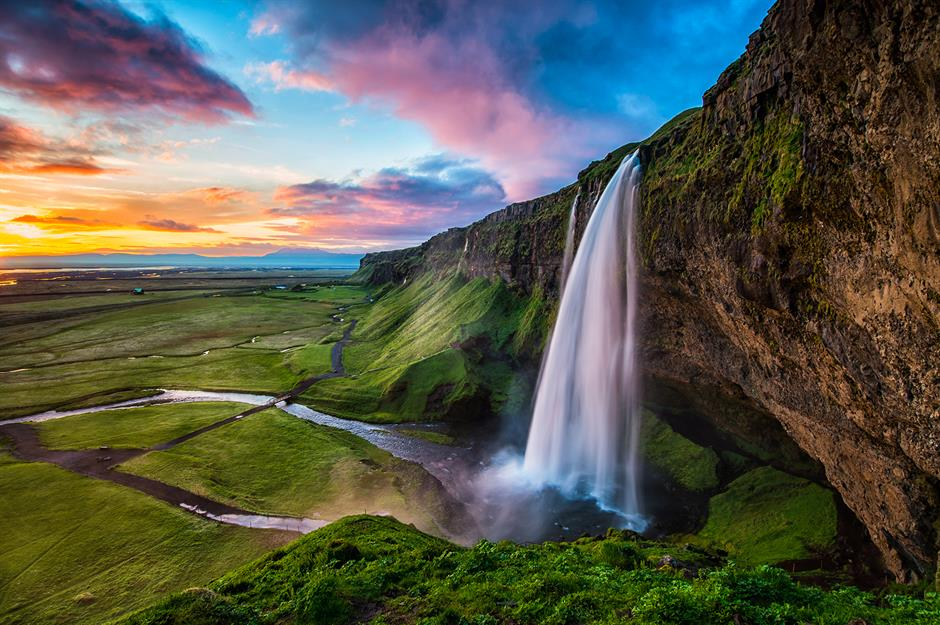

Ir a inicio
Galería de paisajes
Esta web está hecha para que los amantes de los paisajes puedan disfrutar de la belleza de la naturaleza.
 Un paisaje de montañas tomado en Venezuela por el aventurero Max Steel.
Un paisaje de montañas tomado en Venezuela por el aventurero Max Steel.

Fotografía tomada en 2005 mientras se hacía una excursión para conocer el ecosistema del Valle de Aburrá.